学以致用，培养学生解决实际问题的能力 [1]
特别提示
小朋友，不知你感受到没有，在我们的现实生活中到处都有数学问题，比如：商店的打折销售，房间的墙壁粉刷，预计明天的天气状况，调查家里人均每天的水、盐、糖的用量等。运用所学的知识研究、解决生活中的这些问题，不仅能加深对所学知识的理解，还有利于提高分析问题和解决问题的能力。请大家回忆一下，在小学阶段我们都学过哪些类型的应用题，先整理整理，分分类，再认真进行分析，找出解决各类问题的有效方法。分析应用题，无论从条件入手，还是从问题出发，都要分清题目中的条件与条件、问题与条件之间有无关系，有怎样的关系，要根据相关的条件来解答问题。无论遇到什么样的题，都要学会从不同角度去有条理、有根据地思考问题、分析问题，要养成独立思考、自主探究、相互交流和善于检验的良好学习习惯，学会收集、处理数学信息，体会数学与生活的密切联系。
为了便于大家学习，下面分整数和小数应用题，分数、百分数应用题，比和比例应用题，列方程解应用题四个方面进行探究。
整数和小数应用题
一、要点回顾
（一）掌握应用题的基本结构和解题步骤，理解和掌握应用题中常见的数量关系和解题思路。
（二）会解答2步～3步计算的应用题，有的题要能用不同的方法解答。
（三）能选用对应、假设、转化等数学方法解题。
二、学法点拨
（一）解答应用题，一般采用分析法和综合法分析题意，有时也可两法并用。当题目中条件比较清楚而问题又不太复杂时，可以从条件出发思考，这是综合法；反之，从问题出发思考，逐步追溯到条件，这是分析法。一般地说，综合法的思维过程是顺向的，容易理解；分析法的思维过程是逆向的，但方向明确。
例1，一堆煤有900千克，烧了4个月后还剩180千克，平均每月烧煤多少千克？
分析一：从已知条件入手。（综合法）
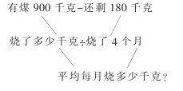
分析二：从问题出发。（分析法）
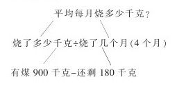
（二）解答应用题的步骤是：①认真审题，弄清题意；②分析数量关系，确定解题思路；③列出算式，算出得数；④检验，写出答语。
（三）当遇到数量关系比较复杂，用分析法和综合法也难以解决的应用题时，要学会从不同角度去思考问题，适当选用其他数学方法，从中找到解决问题的办法。
例2，一桶油，用去一半后连桶还重2.9千克，已知桶重0.4千克，问一桶油连桶重多少千克？
思路一：由两个已知条件可以求出半桶油的重量，即2.9-0.4=2.5（千克），然后用半桶油乘以2再加上桶的重量就是问题的答案了。
思路二：根据第一个已知条件可以求出一桶油与两个桶重量的和，既2.9×2=5.8（千克），然后用5.8减去一个桶的重量就是一桶油连桶的重量了。
想一想：如果这道题改为一桶油重多少千克，你会解答吗？你能用几种方法解答？
例3，某招待所买20张桌子和20把椅子，一共用去2500元。已知1张桌子与4把椅子的价钱相等，每张桌子和每把椅子各多少元？
可以这样想：将20张桌子全部转化成椅子，根据1张桌子等于4把椅子得4×20=80（把），由此可知道买了（80+20）把椅子共用去2500元，所以每把椅子的价钱是2500÷100=25（元），再根据椅子的单价求桌子的单价。
也可以将椅子转化成桌子，先求出桌子的单价，请你试一试。
三、实践平台
（一）做一做，议一议
1.只列式，不计算。
（1）车站货场堆放货物4250吨，每天运出370吨，运了5天，剩下的货物要求在4天内运完，平均每天运出货物多少吨？
（2）一种毛线2.4千克是159.6元。妈妈要买3千克毛线，付给营业员300元，应找回多少元？
（3）一列火车30分钟行驶39千米，用同样的速度，从银川到兰州用了6小时，从银川到兰州的路程是多少千米？
2.先画出线段图，再列式。
（1）李村小学三年级种树120棵，四年级种树的棵数是三年级的2倍，五年级种树的棵数比三年级和四年级的总数少50棵，五年级种树多少棵？
（2）希望小学图书馆有科技书和工具书共280本，其中科技书是工具书的2.5倍。问工具书有多少本？
3.根据算式提出问题。
（1）一堆沙子重7.2吨，5天用去4.5吨
（7. 2-4.5）÷（4.5÷5）
（2）大车和小车共同运1120吨水泥。小车每天运40吨，大车每天运100吨。
①1120÷（40+100）
②1120-（40+100）×2
4.两人共加工雨伞500把，甲比乙少加工32把。你能提出哪些问题，然后再解答。
5.解答下列各题。
（1）有两块玉米地，第一块2.5公顷，共产玉米17.5吨；第二块3公顷，每公顷产玉米6.8吨。这两块地平均每公顷产玉米多少吨？（得数保留两位小数）
（2）丁丁买2支自动铅笔和8本练习本共用去5.60元。已知一支铅笔的价钱可以买3本练习本，每本练习本多少元？
（3）文具厂生产74000支钢笔，每10支装一盒，每盒价格为100元，每50盒装一箱，一共可以装多少箱？
（4）有两筐苹果，卖出一筐的一半后连筐重47.4千克，已知一个筐重1.2千克，一筐苹果重多少千克？
（二）自我监测，试试能力
1.在正确算式的括号里打“√”。
（1）一个化肥厂一月份和二月份生产化肥500吨，三月份生产化肥400吨，四月份生产化肥300吨。平均每月生产化肥多少吨？
（500+400+300）÷3（）
（500+400+300）÷4（）
（500×2+400+300）÷4（）
（2）小强和小军骑自行车从学校向不同的方向骑去。1.5小时后两人相距37.5千米。小强每小时行12千米，小军每小时行多少千米？
37.5×1.5-12（）37.5÷1.5-12（）
37.5-（12×1.5）（）
2.列式解答。
（1）挖一条排水沟，原计划每天挖135立方米，20天完成。如果每天比原计划多挖45立方米，多少天可以完成任务？
（2）银川到同心相距约202千米。一辆汽车早晨8点从银川出发，行驶2.5小时后超过中点13千米，这辆汽车平均每小时行多少千米？
（3）小庄副业组有24人，需编织竹筐600只。每人10天能编织50只。7月10日开工，什么时候完成任务？
（4）一批布原计划可以做600套服装，改进裁剪方法后，实际每套用布2米，比原计划节省0.2米。这批布可以多做多少套服装？
（5）一个煤矿上半年计划采煤66万吨，实际每月比原计划多采煤2.2万吨，照这样计算，完成上半年计划要用几个月？
（6）甲乙两地相距162千米。汽车从甲地出发行2.5小时离终点27千米，汽车行全程共需要多少小时？
四、走进生活
1.一个人每天应饮水1.4升。你平时的喝水杯能装多少升水？每天需要喝多少杯水才能满足人体的需要？
2.一瓶药规格是0.25克×30片，医生处方这样写道：一次0.5克，一日三次，问这瓶药可以供病人服用几天？
3.小兰家分得一套80平方米的新居，其中客厅长4.5米、宽3.5米，市场上有边长分别为0.3米、0.4米、0.5米的正方形瓷砖，请你帮小兰家选一种比较合适的瓷砖，算一算客厅需要这种瓷砖多少块？
分数、百分数应用题
一、要点回顾
（一）在理解分数、百分数意义的基础上，掌握分数、百分数应用题的结构特征、数量关系和解题步骤、思考方法。
（二）会解决分数、百分数的简单实际问题，会解答一般的工程问题。
（三）会用列方程法解答逆向叙述的较复杂的分数应用题。
二、学法点拨
（一）正确地判定作为单位“1”的量。因为在分数、百分数的应用题中，其他的量都是与作为单位“1”的量相联系的，分析应用题的数量关系，确定算法，都是根据所求量与作为单位“1”的量的关系来进行的，所以正确地判定作为单位“1”的量是解题的关键，也是练习的重点。
（二）分数应用题一般分为两部分，一部分是题中的数量关系和解答方法与整数、小数应用题相同，只是数据由整数、小数变为分数；另一部分是根据分数的意义和分数乘法意义的扩展而形成的分数应用题，分为三类基本应用题：（1）求一个数是另一个数的几分之几。比较量÷标准量=几分之几。（2）求一个数的几分之几是多少？标准量×几分之几=比较量。（3）已知一个数的几分之几是多少？求这个数。比较量÷几分之几=标准量。百分数的应用题与分数第二部分的应用题类同。
（三）分析分数、百分数应用题的步骤：
（1）先根据重点句确定标准量（单位“1”）；
（2）分析已知条件和问题，确定计算方法；
（3）找准分率的对应关系；
（4）根据数量关系列式解答。
例：小明看了一本书的
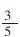
，还剩15页没有看，这本书共有多少页？分析：（1）根据“小明看了一本书的
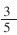
”这个重点句，可以判定全书的页数为标准量（单位“1”）；（2）标准量是末知数，已知剩下的页数，如果能求出相对应的分率，就可以用除法求标准量；（3）“剩下的页数”相对应的分率是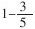
；（4）根据比较量÷几分之几=标准量，剩下的页数÷剩下的分率=全书的页数，即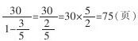
，答：这本书共有75页。（四）较复杂的分数应用题，百分数应用题的例题分析。
例1：某班有40名学生，其中男生是女生的
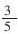
，问男生有多少名？解法一：把女生看作“1”，男生是，男生女生的和就是
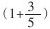
，根据“已知一个数的几分之几是多少，求这个数”用除法计算，列出算式：40÷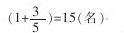
。解法二：把“男生是女生的
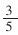
”转化为男生与女生的比是3：5，可以知道男生占全班人数的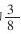
，据“求一个数的几分之几是多少？”用乘法计算，列出算式：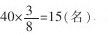
。解法三：已知全班人数是40，男生女生的份数和是8，男生占其中的3份，按照整数乘法、除法的意义计算，先求一份的数，再求这样几份的数，列式为40÷（3+5）×3=15（名）。
例2：修一条长120米的水渠，前3天修了全长20%，照这样的计算，修完这条渠需要多少天？
解法一：120÷（120×20%÷3）=15（天）。
解法二：3×[120÷（120×20%）]=15（天）。
解法三：1÷（20%÷3）=15（天）。
解法四：3×（1÷20%）=15（天）。
解法五：3÷20%=15（天）。
想一想：上面的解法对吗？你能理解哪几种解法？你喜欢哪几种解法？同学之间相互交流自己的看法。
如果问题改为：“修完这条渠还需要多少天？”该怎样解答？有几种解答方法？
例3：要修一段长600米的公路，甲队单独修20天完成，乙队单独修24天完成，两队合作修多少天可以完成？
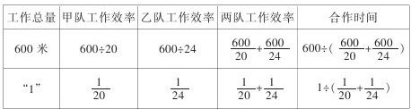
讨论：（1）表中反映的数量关系是什么？
（2）“600÷
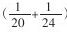
这样列式对吗？”为什么？在解答分数应用题、百分数应用题时，要注意：①基本题与较复杂题的比较；②较复杂的乘法题、除法题与加法题、减法题的比较；③较复杂的乘法题、除法题与加法题、减法题的比较。在比较中找出相同点，区别点，以防相互混淆。
三、实践平台
（一）做一做、议一议
1.看图填空。
线段A是B的（），A比B短（）；线段B是A的（），B比A长（）。
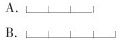
2.看图列式。
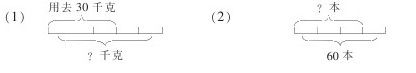
3.只列式，不计算。
（1）飞机的时速是480千米，火车时速比飞机慢
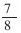
，火车的时速是多少千米？（2）火车的时速是60千米，比飞机时速慢
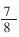
，飞机的时速是多少千米？（3）一堆煤，第一次运走它的
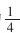
，第二次运走它的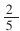
，第一次比第二次少运6吨。这堆煤原有多少吨？（4）一堆煤400吨，第一次运走它的
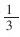
，第二次运走它的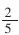
。第一次比第二次少运多少吨？（5）某厂今年生产自行车6万辆，比去年增产
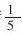
，去年生产多少万辆自行车？4.填空。
（1）一段路，甲队单独修8天完成，乙队单独修10天完成。①甲队每天修这段路的（），乙队每天修这段路的（）；②两队合修，每天修这段路的（）；③两队合修3天后，这段路还剩（）；④两队合修，（）天完成。
（2）①一条绳子长20米，剪去
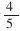
米，还剩（）米；②一条绳子长20米，剪去全长的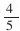
，还剩（）米；③一条绳子长20米，剪去全长的，剪去（）米；④一条绳子，剪去全长的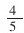
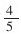
，还剩4米，这条绳子长（）米；⑤一条绳子长20米，第一次剪去全长的米，这条绳子短了（）米。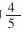
，第二次剪去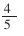
5.装订一批图书，甲工人4小时可装订这批图书的
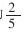
，乙工人3小时可装订这批图书的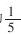
。两人合作，几小时完成？6.加工一个零件，甲乙合做8天完成。甲单独做需要12天，乙单独做需要多少天、
7.小化肥厂去年生产化肥16万吨，实际生产20万吨。①计划产量是实际的百分之几？②实际产量是计划的百分之几？③超过计划的百分之几？④如果把“实际生产20万吨”改为“实际超产20万吨”该怎样列式？
8.王大妈2000年存款2000元，她整存整取三年，每年的利息是2.7%，到2003年王大妈税后利息得多少元？
9.一本故事书270页，李明前3天看了全书的40%，照这样计算，看完这本书需要多少天？（用自己喜欢的方法解答）
（二）自我监测，试试能力
1.填空。
（1）黄菊花的重量是白菊花的1.5倍，白菊花的重量是黄菊花的（）。
（2）苹果比梨多
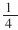
，梨比苹果少（）。（3）五（1）班今天的缺勤率是2%，出勤率是（）。
（4）某村去年的产量是400万吨，今年的产量460万吨.今年比去年增产（）。
（5）合唱队男生占
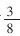
，女生比男生多（）。（6）一本书，小王4天看了全书的
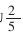
，看完全书要用（）天。2.判断（对的打“√”，错的打“×”）。
（1）一根铁丝长3米，先截去
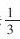
，再截去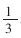
米，还剩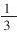
米。（）（2）长方形的周长是90米，宽是长的
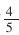
，长是50米。（）（3）加工一个零件的时间由原来的5分钟减少到4分钟，工作效率提高了25%。（）
（4）一种商品现在的售价比原价降低了20%，那么售价的
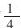
相当于原价的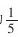
。（）3.根据补充的条件写出算式。
某筑路队上午修路20米，下午修路多少米？①上午比下午少修
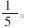
。算式：②上午修路占全天修路的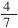
。算式：③下午比上午多修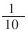
。算式：④上午比下午少修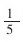
米。算式：4.根据算式提出问题。
某工厂一车间有150人，占全厂总人数的20%，二车间的人数是一车间的
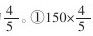
问题：。②150÷20%问题：。③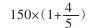
问题：。④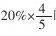
问题：。⑤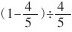
问题：。5.应用题。
（1）一种零件成本比原来降低15%，现在的成本是31.79元。原来的成本是多少？
（2）1982年我国人口是10.1亿，1990年我国人口是11.6亿。1990年比1982年人口增长百分之几？（百分号前保留两位小数）
（3）妈妈买一块布料，做上衣用去2.5米，占这块布料的45少1.5米。这块布料是多少米？
（4）三年级一班和二班为希望小学捐款金额相等。如果从一班取出
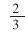
，从二班取出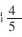
，这时一班剩下的金额比二班多16元。原来两个班各捐款多少元？（5）工厂降低成本后，为答谢广大顾客，决定开展“买四送一”（买四瓶矿泉水再送一瓶）活动。如果矿泉水原来每瓶2元，那么，优惠了百分之几？
四、走进生活
1.新华书店为庆祝“六一”儿童节，决定凡是儿童读物一律八五折优惠。妈妈给小红50元钱，请你帮小红算一算，购买下面书中的哪两种更划算，还能剩多少元？
《从小学电脑》15元；《少儿恐龙大世界》12.75元；《安徒生童话》38元。
2.学校组织大家去春游，如果我们班同学每人各自买一瓶矿泉水，单价是2元。如果整箱买，小箱12元，可打九折；大箱20瓶，可打八折。请你们小组合作，设计购买方案。
比和比例应用题
一、要点回顾
（一）能根据比和比例的意义理解比例尺、按比例分配，并能解答其简单的问题。
（二）正确理解正比例、反比例的意义，能找出生活中成正比例、反比例量的实例，正确解答这类简单的实际问题。
（三）能根据题目的具体情况选择简便的解题方法，解决一些实际问题。
二、学法点拨
（一）正确认识比例尺
比例尺﹦图上距离：实际距离，根据三者之间的关系可以得到图上距离﹦实际距离×比例尺，实际距离﹦图上距离÷比例尺。
比例尺有扩大比例尺和缩小比例尺两种，当用精密仪器制图时要用扩大比例尺；绘制建筑设计图、地图等要用缩小比例尺。像 这样的比例尺称之为线段比例尺，它表示图上4厘米，实际距离240千米。由此可得比例尺4厘米：240千米﹦1:6000000。
应注意：求比例尺时，图上距离和实际距离要统一单位。
（二）比的应用——按比例分配
按比例分配就是把一个数量按照一定的比例进行分配的问题。这类题目的已知条件一般有两种形式，一种是用比的形式反映各部分占总数量的份数，另一种是直接给出各部分占总数量的份数，另一种是直接给出各部分占总数量的份数。
解题时，应注意：①要掌握条件的意义。如，甲：乙=3:2，也就是甲占3
份，乙占2份，甲和乙共占5份，甲占总数的 ，乙占总数的 。②解题步骤是：先求出各部分占总份数的几分之几，再按照求一个数的几分之几是多少用乘法计算，分别求出各部分的值，最后进行验算。③沟通按比例分配应用题和分数应用题的联系，如白兔数量与黑兔数量的比是2:3，也就是白兔的数量是黑兔数量的 。
（三）正比例、反比例应用题
（1）题目中已知条件含有成正比例的量，可以根据正比例的意义列出比例式，即 （一定）。如：一辆载重汽车3次可运钢材21吨，98吨钢材需要运多少次？分析：由3次可运钢材21吨，得出运钢材的数量÷次数=汽车载重量（一定）。
整理条件：3次——21吨
？次——98吨
设98吨钢材需要运x次，根据题意得：
（2）题目中已知条件有成反比例的量，可以根据反比例的意义列出等式解答，即“xy=k（一定）”。如工厂有一批煤，计划每天烧5吨，可烧72天。实际每天烧3吨，实际烧了多少天？分析：由每天烧5吨，可烧72天，得每天烧煤量×天数=烧煤总量（一定）
整理条件：5吨——72天
3吨——？天
设实际烧x天，根据题意得：
5×72=3x或3x=5×72
用正比例、反比例方法解应用题的基本思路：（1）理解题意，归纳基本的数量。（2）列出表示比例关系的数量关系式。（3）确定两种相关联量的对应数值。（4）列出比例式，并解答、检验。
三、实践平台
（一）做一做、议一议
1.填空
（1） 这是（）比例尺。它表示图上1厘米的距离相当于实际距离（），比例尺是（）。
（2）出勤人数是缺勤人数的39倍。①出勤人数与缺勤人数的比是（）；②出勤人数占总人数的（）；缺勤人数占总人数的（）；③出勤率是（）
（3）三月份产量比二月份增产 ，二月份与三月份的产量比是（）。
（4）三角形的内角比是3:1：5，这是（）三角形。
（5）10克糖溶入90克水中，糖与水的比是（），含糖率是（）。
2.根据问题列算式
一本书稿，4人排字，要15天完成。照这样计算，①10天完成需要多少人？②增加2人，多少天完成？③提前3天完成，需要多少人？
3.如图是用1:500的比例尺画出的逸夫小学筹建的游泳池的平面图。量出图中的长和宽，再算出游泳池的面积。
4.在一幅中国地图上，用5厘米长的线段表示300千米。（1）求这幅地图的比例尺。（2）在这幅地图上，量得海原到隆德的直线距离是2厘米。海原到隆德的实际距离约为多少千米？（3）中宁到西吉的实际距离约是200千米。在这幅地图上，中宁到西吉的距离大约是多少厘米？
5.小林家电费比水费多付3.5元，电费与水费的比是7:2。小林家一共要付多少钱？
6.请用比例式解下面各题。
（1）100千克黄豆可以榨油13千克，照这样计算，要榨油7.8吨，需要黄豆多少吨？
（2）一栋楼每层高度一样，量得最下面3层的高度是8.4米，上面还有12层，这栋大楼高共有多少米？
（3）一间会议室用瓷砖铺地。用边长4分米的方砖需要200块，如果改用边长5分米的方砖需要多少块？
（4）一堆煤，原计划每天烧3吨，可以烧96天。改进技术后，每天只烧2.4吨，这堆煤可以烧多少天？①将题中的“每天只烧2.4吨”改为“每天节约0.6吨”你会解答吗？②将题中的“这堆煤可以烧多少天？”改为“这堆煤可以多烧多少天？”你会解答吗？
（二）自我监测，试试能力
1.填空。
（1）写一篇小作文，甲用40分钟，乙用半小时。甲乙的时间比是（），速度比是（）。
（2）甲数的 是乙数的 ，已知乙数是24，甲数是（）。
（3）一个大正方形和一个小正方形的周长分别是28厘米、24厘米，小正方形和大正方形的面积比是（）。
（4）在地图上量得一个仪器长8厘米，它的实际长度是16毫米。这张设计图的比例尺是（）。
（5） ，当b是不变量时，a和c成（）比例。
2.判断。（对的画“√”，错的画“×”）
（1）一个齿轮30秒转动180周，转720周需要2分钟。（）
（2）一根木料锯4段需要1.2小时，照这样计算，锯5段需要1.5小时。（）
（3） 表示图上距离与实际距离的比是1:30。（）
（4）数A是数B的8倍，那么，数A与数B的比是1:8。（）
（5）被除数一定，除数与商成反比例。（）
3.用比例式解答下面各题。
（1）大河机床厂计划一个月生产360台机床，实际前3天就生产了45台，照这样计算，可以几天完成任务？（一个月按30天计算）
（2）一架飞机从甲地飞往乙地。每小时飞行540千米，2.5小时可以到达。回来时每小时飞行675千米，可以提前多少时间？
4.请选用合适的方法解答下列各题。
（1）一个体积300立方厘米的木盒，长10厘米，宽6厘米，高是多少？
（2）五（1）班买45张电影票，甲种票每张8元，乙种票每张6元，票价共计310元。两种票各买了多少张？
（3）学校用996元买篮球和排球，买了6个篮球，每个85元。剩下的钱刚好买了6个排球，每个排球多少元？
（4）哥哥和弟弟共储蓄456元，如果哥哥给弟弟24元，那么两人的存款数相等。两人各储蓄多少元？
5.新建一栋楼房，地基是长方形，长80米，宽30米，把它画在设计图上，长是40厘米，宽应画多少厘米？
四、走进生活
小李、小张和小王合乘一辆出租车，按行程距离分摊车费。小李在全程的13处下车，小张在全程的23处下车，小王最后下车，共付车费90元。请你算一算，小李、小张各应付多少车费给小王比较合适？
列方程解应用题
一、要点回顾
（一）理解和掌握列方程解应用题的思路，掌握解题的方法和步骤。
（二）学会列方程解数量关系比较复杂和比较隐蔽的逆向问题。
（三）通过学习，培养抽象思维的能力和分析问题、解决问题的能力。
二、学法点拨
（一）列方程解应用题与算术方法解应用题的联系与区别。用算术方法解应用题与列方程解应用题都需要分析数量关系，列算术式解题是列方程解应用题时列等式的基础。但是由于解题方法的不同，两者又有所区别。（列表如下）
（二）列方程解应用题的一般步骤
1.审题，分析数量关系。2.设未知数，在小学阶段一般直接设要求的数量。3.找出等量关系，列出方程。4.解方程，求出未知数的值，一般不写单位名称。5.检验并书写答语。
（三）例题分析：
例1：姐姐有5元钱，买12本练习本还剩0.38元。每本练习本多少元？
分析：题目中有两种关系：一是数量关系，即单价×数量=总价；二是等量关系，即总钱数-买练习本钱数=剩余钱数，从中还可以联想到：买练习本钱数+剩余钱数=总钱数，总钱数-剩余钱数=买练习本钱数
解：设每个练习本x元。列方程得：
5-12x=0. 38，x=0.39
答：每个练习本0.39元。
想一想：你能根据上面的等量关系列出其他的方程式吗？
例2：运来香蕉和橘子共115筐，其中橘子的筐数比香蕉的3倍少5筐，运来香蕉多少筐？
分析：题目中的数量关系是“橘子的筐数比香蕉的3倍少5筐”，当设香蕉为“x”时，则橘子为3x-5；题目中的等量关系是：香蕉筐数+橘子筐数=115
解：设运来香蕉x筐。列方程得：
x+3x-5=115，x=30。答：运来香蕉30筐。
想一想，你还能列出其他方程式吗？
三、实践平台
（一）做一做、议一议
1、根据下面的条件，写出数量间的相等关系
例：一块地耕了3天后还剩20公顷。关系式：一块地（公顷）-3天耕了公顷数=20（公顷）
（1）男生比女生少5人。关系式
（2）大豆和玉米共重90吨。关系式
（3）前5小时比后4小时多行63千米。关系式
2.下面哪几道题用方程解比较容易，并且解答。
（1）五年级学生在学校运动会上得80分，比四年级得分的2倍少20分，四年级得了多少分？
（2）五年级学生在学校运动会上得80分，是四年级得分的1.6倍，四年级得了多少分？
（3）五年级在学校运动会上比四年级多得30分，五年级得分是四年级的1.6倍，四年级得了多少分？
（4）四年级学生在学校运动会上得50分，五年级得分比四年级的2倍少20分。五年级得了多少分？
3.对比练习，列方程解答。
（1）粮仓里有20吨黄豆，运走了3车，还剩6.5吨。平均每车运走多少吨？
（2）粮仓里原有3车黄豆。运走了7吨后，还剩6.5吨。原来平均每车有多少吨？
（3）粮仓里原有20吨黄豆，又运来了3车，现在一共33.5吨。平均每车运多少吨？
4.用不同的方法解下面各题。
（1）商场上午卖出8件衬衣，下午卖出5件同样的衬衣。上午比下午多卖195元，平均每件衬衣卖多少元？
（2）商场上午卖出8件衬衣，下午卖出5件同样的衬衣，一共卖得845元。每件衬衣卖多少元？
（3）商场上午卖出8件衬衣，一天卖得845元，每个衬衣卖65元。算一算，下午卖出多少件？
5.菜场运来黄瓜和西红柿350千克，其中黄瓜的重量是西红柿的 ，运来西红柿多少千克？
6.茶庄卖出117包青茶和绿茶，卖出的青茶比绿茶少13包，卖出青茶、绿茶各多少？
7.两地相距396千米。甲乙两车同时从两地相对开出，3.6小时相遇。已知甲车每小时比乙车多行9千米，乙车每小时行多少千米？
8.一只两层书架，上层放的书是下层的3倍，如果把上层的120本书放入下层，则两层的书相等。原来上层、下层各有书多少本？
（二）自我监测，试试能力
1.填空。
（1）图书室里的工具书是文艺书的3倍，文艺书比工具书少72本。设（）为x，则（）为3x，列出等式是（）；文艺书有（）本，工具书有（）本。
（2）学校组织参观美术展，共去350人，其中男生人数是女生的设（）为x，则（）为 x，列出等式是（），女生去（）人， ，男生去（）人。
2.选择正确答案的序号填空。
（1）长方形的周长20.4厘米，长是宽的1.5倍。宽是多少厘米？设宽x厘米，列式：（）
①1.5x+x=20.4
②（1.5+1）x=20.4÷2
③1.5x+x=20.4×2
（2）商店运进酱油和醋260袋，酱油比醋少7袋，运进醋多少袋？设运进醋x袋，列式：（）
①x+x-7=260
②x+x+7=260
③2x=260-7
④2x=267+7
3.用列方程法解下列各题。
（1）小田买6节五号电池，付出20元，找回0.20元。每节五号电池多少元？
（2）甲乙两车同时从相距520千米相向而行，3.4小时后两车还相距10千米。甲车每小时行72千米，乙车每小时行多少千米？
（3）家具店卖出的书架个数比衣架少54个。卖出的书架是衣架的 ，卖出书架和衣架各多少？
4.用你喜欢的方法解下列各题。
（1）学校买来绳子153米，先剪下9米做了5根跳绳。照这样计算，剩下的绳子可以做这样的跳绳多少根？
（2）小英家养了鸡和兔共13只，它们的脚共有36只，鸡和兔各有几只？
四.走进生活
1.学校组织了科学、艺术和电脑兴趣小组，小强、小林和小亮分别参加了其中一项。小林不喜欢科学，小亮不是电脑兴趣小组的，小强喜欢艺术。你知道他们可能在哪个兴趣小组？
2.你知道你的生日吗？算一算你自己从出生第一天起到今天一共生活了多少天？
3.有2件衣服和3条裤子，要配成一套服装，有多少种不同的配套方法？试试看。